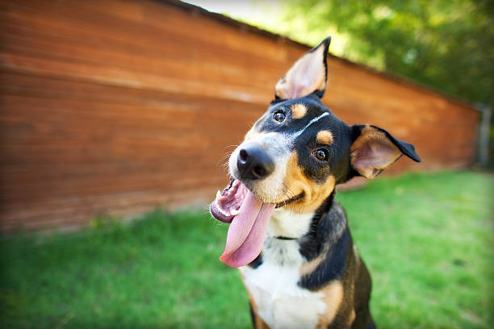

Toda vida importa
Desde 2014 resgatando, cuidando e encontrando novos lares para cães e gatos em situação de vulnerabilidade.

O Instituto Patinhas Unidas
O Instituto Patinhas Unidas foi fundado em março de 2014, a partir da união de um grupo de amigos com o propósito de cuidar, proteger e adotar cada animal em estado de vulnerabilidade. Atuamos principalmente no resgate de animais feridos ou em situação de risco, recuperação e adoção. Mantemos um abrigo com cerca de 300 animais, entre cães e gatos, todos resgatados das ruas, onde eles são protegidos, tratados, alimentados e aguardam pela chance de serem adotados.
Quem somos
Somos uma organização dedicada à proteção e ao bem-estar de cães e gatos em situação de abandono. Nosso trabalho envolve o resgate, tratamento, alimentação e cuidado dos animais até que eles encontrem um novo lar.
Nossa missão
Nossa missão é proteger animais em situação de abandono, oferecer os cuidados necessários e ajudar cada um deles a encontrar um novo lar.
Como funciona o resgate
Resgate: o animal é retirado de uma situação de risco.
Cuidados: recebe alimentação, atendimento e os cuidados necessários.
Recuperação: o animal passa pelo período necessário para se recuperar.
Adoção: depois de recuperado, ele pode encontrar um novo lar.
O Instituto em números
2014
Ano de fundação do Instituto.
300
Animais atualmente acolhidos no abrigo.
Cães e gatos
Animais atendidos pelo Instituto.
Por que fazer doações
As doações ajudam a manter o abrigo e garantir alimentação, medicamentos, cuidados veterinários e outros recursos necessários para cuidar dos animais resgatados.
Veja como sua doação faz a diferença
Cada doação contribui para que os animais resgatados recebam os cuidados necessários durante sua recuperação e tenham mais oportunidades de encontrar um novo lar.
Ajude um animal hoje
Você pode fazer a diferença na vida de um animal. Faça uma doação ou participe como voluntário nas ações do Instituto Patinhas Unidas.
Campanha de Adoção Responsável
Feira de adoção todos os sábados no abrigo. Venha encontrar seu companheiro!
Quero participar